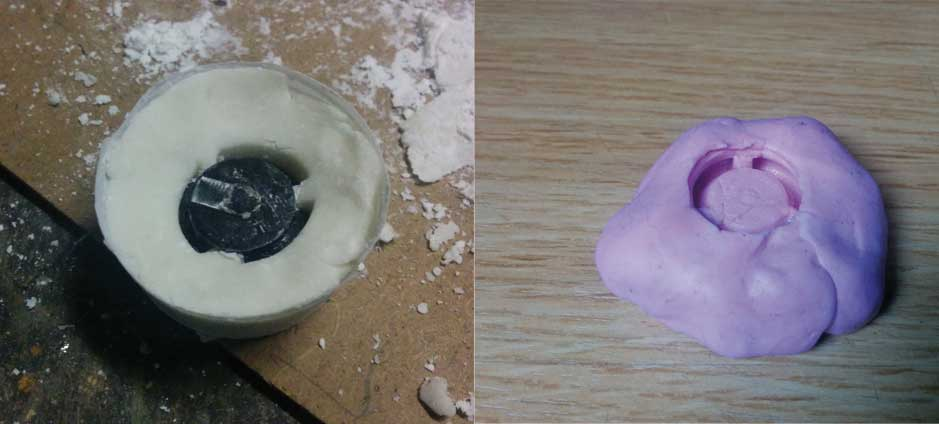

25.03.2015
Two years ago I attended 3D print Exhibition contest during Maker Faire Rome and I win the first prize with a little sueful object
this is the LINK of the contest
For casting and molding module, I decided to use this little 3d printed object to make a mold. Ususally I use the pink silicon to create the mold, But my friend Simone Boasso told me about by mixing silicone and cornstarch is possible to make a paste like Sugru and i would to try!
Classical pink silicon is selled in 2 components to mix in equal parts. To make he new magic paste I started mixing 50/50 and adding cornstarch as the paste doesn't glued on my hand

I filled the mold with the same quantity of simple bi-component resin to see the difference .
Of course the pink silicon produce more detailed pieces, but the Magic potion is perfect to make some mold in case we havent the appropriate silicon! .